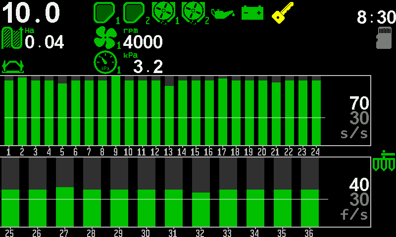

Das Sektionsdiagramm — Säulen, Linie und Farben
Wie Sie die Säulen des Startbildschirms im Modus „Precise“ und im Modus „Flow“ lesen und was die Überwachungslinie bedeutet.
Jede Säule des Diagramms ist eine Sektion — ein Korn- oder Düngersensor. Ihre Höhe ist der Durchfluss durch diese Sektion. Wie der Rest gezeichnet wird, hängt vom Überwachungsmodus der Aussaat ab: „Precise“ (Einzelkorn; Körner je Meter, mit Fehlstellen und Doppelbelegungen) oder „Flow“ (Durchfluss; Körner je Sekunde gegen eine Alarmschwelle). Das Mengenfeld steht am rechten Ende jedes Diagramms: oben der gemessene Wert, darunter die Sollmenge oder die Alarmschwelle, darunter die Einheit.
Modus „Precise“

- Sollmenge. Grau, in Körnern je Meter (s/m). Diesen Wert ändern Sie per Touch.
- Gemessene Menge. Weiß — der Durchschnitt der Reihen im Augenblick.
- Maßstab der Balken. Der Anteil an Fehlstellen oder Doppelbelegungen, bei dem ein Balken bis oben reicht — „Scale S&D,%“ in den Einstellungen.
- Mengenlinie. Die Sollmenge, über alle Reihen gezeichnet.
- Obere Marke. Die obere Toleranzgrenze, in jeder Säule.
- Untere Marke. Die untere Toleranzgrenze.
- Säule. Grün — die Reihe sät innerhalb der Toleranz.
- Fehlstellenbalken. Gelbe Schraffur am linken Rand einer Säule. Je höher, desto mehr Fehlstellen in dieser Reihe.
- Doppelbelegungsbalken. Blaue Schraffur am rechten Rand einer Säule. Je höher, desto mehr Doppelbelegungen.
- Sektionsnummer.
Modus „Flow“

- Alarmschwelle. Grau, in Körnern je Sekunde (s/s). Der Wert, unter dem eine Sektion als Durchfluss verlierend gilt.
- Gemessene Menge. Weiß — der Durchschnitt der Reihen im Augenblick.
- Überwachungslinie. Die Alarmschwelle, über alle Reihen gezeichnet.
- Säule über der Linie. Grün — die Reihe arbeitet.
- Leerer Teil einer Säule. Dunkelgrau über dem Grün: Je höher das Grün reicht, desto mehr Durchfluss.
- Sektionsnummern. Die Düngersektionen zählen nach den Saatgutsektionen weiter.
- Düngerdiagramm. Dasselbe für die Düngersensoren.
- Mengenfeld Dünger. Oben der gemessene Wert, darunter die Alarmschwelle, in Dünger je Sekunde (f/s).
Um die Sollmenge oder die Alarmschwelle zu ändern, berühren und halten Sie das Diagramm, bis sein Sollwert aufleuchtet, und wischen Sie dann nach oben oder unten — ein Schritt je Wischen. Ein Tippen außerhalb der Diagramme beendet das. Siehe Sollmenge ändern.
Die Linie: Reihen darunter stehen nicht unter Überwachung
Die Linie ist die Grenze einer Teilverstopfung, keine Dekoration. Eine Säule über der Linie ist eine Reihe, die arbeitet; eine Säule, die darunter sinkt, ist eine Reihe, die Durchfluss verliert — lange bevor sie ganz verstopft.

- „NOT UNDER CONTROL“ (Nicht unter Überwachung). Die Reihen dieses Diagramms werden nicht überwacht.
- Säulen unter der Linie. Jede Reihe liefert weniger als der Wert.
- Überwachungslinie. Über den tatsächlichen Durchfluss hinaufgezogen.
- Alarmschwelle. Höher, als die Maschine sät.
- Gemessene Menge. Niedriger als die Alarmschwelle.
„NOT UNDER CONTROL“ öffnet kein Alarmfenster; auf der Fahrerebene gibt das Panel stattdessen den Alarmton aus. Reihen unter der Linie stehen mit Absicht nicht unter Überwachung: Das Panel weigert sich, einen Wert zu bewachen, der über dem liegt, was die Maschine tatsächlich liefert. Senken Sie den Wert, bis die Säulen über der Linie stehen, oder lassen Sie das Panel ihn mit einem Doppeltippen einstellen: Alarmschwelle automatisch einstellen.
Ob die Maschine überhaupt sät, entscheidet das Panel nach dem Anteil der säenden Reihen — die Sensoreinstellung „Percent of sowing,%“ (Anteil säender Reihen, %), standardmäßig 20 %. Am Vorgewende fallen die Reihen aus der Überwachung; im nächsten Durchgang kommen sie zurück, mit oder ohne Arbeitsstellungssensor. Das Panel sagt es mit Ton: drei kurze Pieptöne, wenn die Aussaat endet, ein kurzer Piepton, wenn sie wieder beginnt.
Was jede Farbe und jedes Symbol einer Säule bedeutet und die vier Zustände einer Sektion: Säulenfarben und Sektionszustände.
Ihre Maschine tut etwas, das diese Seite nicht beantwortet? Schreiben Sie an support@agriwelt.com — es antwortet ein Ingenieur.